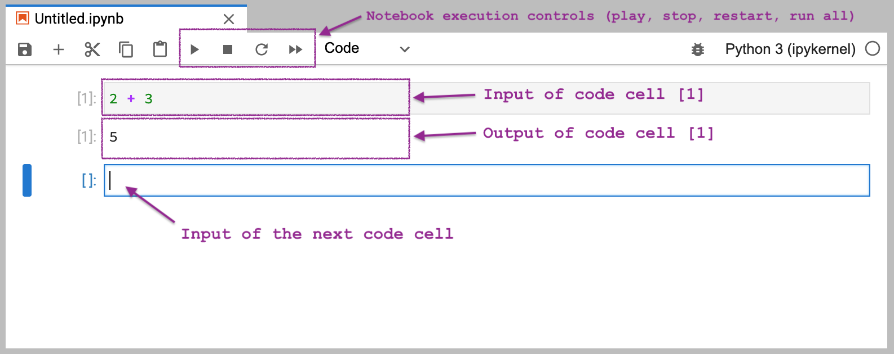

Appendix C — Python tutorial#
Click the binder button  or this link
or this link bit.ly/pytut3 to run this notebook interactively.
Abstract:
In this tutorial,
I’ll introduce you to the basics of the Python programming language.
Don’t worry, learning Python is not complicated.
You’re not going to become a programmer or anything like that,
I’m just going to show you how to use Python as a calculator.
We’ll start by setting up a Python coding environment
on your computer (JupyterLab Desktop).
We’ll then cover basic building blocks like expressions, variables,
functions, lists, for-loops, etc.
By the end of this tutorial,
you’ll be familiar with the essential parts of the Python syntax needed to use the most kick-ass, powerful calculator that ever existed.
Introduction#
Python is like a fancy calculator#
Python commands are similar to the commands you give to a calculator when you want to compute something. The same way a calculator has different buttons for the various arithmetic operations, the Python language has a number of commands you can “run” or “execute.” Knowing how to use Python gives you access to hundreds of useful libraries and thousands of functions, which are like calculator buttons specialized for different domains: math, science, probability, statistics, etc.
Sales pitch about why you should learn Python#
Here are some examples of the things you can do using Python:
You can use Python as a basic calculator for doing arithmetic calculations using math operations like
+,-,*,/, and other math functions.Python is also a scientific calculator since it provides functions like
sin,cos,log, etc.You can use Python as a graphical calculator to plot functions and visualize data.
Python is an extensible, programmable calculator that allows you to define your own functions and operations.
Python provides powerful libraries for numerical computing (
numpy), scientific computing (scipy), and symbolic math calculations (sympy).Python has libraries for data management (
pandas), data visualization (e.g.seaborn), and statistics (e.g.statsmodels).
If any of these seems useful to you, then read on to get started learning Python!
How to learn Python#
The fastest way to learn Python is through hands-on experimentation in an interactive coding environment like a Jupyter notebook. By running various Python commands and seeing the results they produce, you can quickly learn what Python functions (calculator buttons) are available, and what they do.
This tutorial is intended for absolute beginners with no prior programming experience. I’ll guide you step-by-step through the code examples, and explain what the code does in plain English. You can then explore the Python code examples, run them on your own, or “play” with them by changing the commands and running them with different inputs to see how the outputs change. I’ve also prepared some exercises for you, so you can practice what you’re learning.
Getting started#
Follow the six steps outlined below to setup the JupyterLab Desktop computational environment on your computer that will allow you to run this tutorial interactively on your laptop or desktop. The process takes ten minutes, but it will greatly improve your Learning User Expereince (LUX) for the rest of the tutorial.
Installing JupyterLab Desktop#
JupyterLab is a computing platform that makes it easy to run Python code. JupyterLab provides a notebook interface that allows you to run and edit Python commands interactively. JupyterLab Desktop is a convenient all-in-one application that you can install on your computer to run JupyterLab.
STEP 1: Download JupyterLab Desktop#
Visit the web page
github.com/jupyterlab/jupyterlab-desktop
and choose the download link for your operating system.
Complete the installation steps.
STEP 2: Start JuputerLab Desktop#
Launch the JuputerLab Desktop application and choose the New session… option from the menu. You might be prompted to install a “bundled Python environment,” which you should accept. After this is done, you should see a window similar to the one shown below.
STEP 3: Create a new notebook#
Click the Python 3 (ipykernel) button to create a new Jupyter notebook.
Notebooks are interactive documents#
A Jupyter notebook consists of a sequence of cells, similar to how a text document consists of a series of paragraphs. The notebook you created in STEP 3 has a single empty code cell, which is ready to accept Python commands.
STEP 4: Try a numerical calculation#
Enter the expression 2 + 3 into the code cell,
then press SHIFT+ENTER to run the code.
You should see the result of the calculation displayed on a new line immediately below your input.
The cursor will automatically move to the next code cell,
as shown in the screenshot below.

Notebook execution controls#
The menu bar at the top of the notebook contains the notebook execution control buttons. The play button executes the code in the current cell, and is equivalent to pressing SHIFT+ENTER. The stop and restart buttons can be used to interrupt a computation that is stuck or taking too long. The run all button is useful when you want to rerun all the cells in the notebook from start to finish.
Code cells contain Python commands#
Each code cell in a notebook is a command prompt
that allows you to enter Python commands and “run” them by pressing SHIFT+ENTER,
or by clicking the play button in the toolbar.
Let’s look at the sample command from screenshot again.
We can make Python compute the sum of two numbers by entering 2+3 in a code cell,
then pressing SHIFT+ENTER,
as show below.
2 + 3
5
When you run a code cell,
you’re telling the computer to evaluate the Python command it contains.
Python then displays the result of the computation immediately below.
In the above example,
the input is the expression 2 + 3,
and the output is the number 5.
Let’s now compute a more complicated math expression \(2\cdot(1+4) - 3\). The Python equivalent of this math expression is shown below.
2*(1+4) - 3
7
Note the Python syntax for math operations is similar to the notation we use in math:
addition is +, subtraction is -, multiplication is *, division is /,
and we use the parentheses ( and ) to tell Python to compute 1+4 first.
Running a code cell is similar to using the EQUALS button on a calculator: whatever math expression you entered, the calculator will compute its value and display its result. Our interaction with the Python calculator follow a similar scipt: we input some Python code, then press SHIFT+ENTER to make Python run the code and display the result.
STEP 5: Your turn to try!#
Type in some expression involving numbers and operations in a new code cell, then run it by pressing SHIFT+ENTER or by using the play button in the toolbar.
STEP 6: Download the tutorial notebook#
Click this link bit.ly/pytut3nb to download the notebook python_tutorial.ipynb
and save it to a permanent location on your computer
(e.g. create a new folder Documents/LearningPython/ and place the tutorial notebook in that folder).
Switch back to the JupyterLab window
and use the File Browser panel to navigate to the location on your computer where you saved the notebook python_tutorial.ipynb,
then open it.
If you are reading this tutorial in print, I expect you to follow along with the notebook on your computer for the remainder of this tutorial, so that you can play with the code examples interactively. The tutorial notebook contains many pre-filled code cells with examples of Python commands for you to run. I encourage you to try editing the contents of the code cells and re-run them to see how the output changes. Using this trial-and-error is the best way to learn Python commands.
Learning on hard mode#
If you are feeling particularly ambitious,
you can try manually typing-out all the code examples into a blank notebook.
In general,
I recommend that you type things out by yourself rather than relying on copy-paste.
It’s generally considered a good to practice to manually re-type code examples by yourself,
because it improves your general typing skills,
and builds you “muscle memory.”
You also get practice entering special characters like [, ], {, }, >, <, #,
which are often used in Python code.
Expressions and variables#
Most Python commands involve computing the value of some Python expression and storing the resulting value in a variable. Since our goal is to learn Python, we’ll start by explaining what Python expressions are and how to store values into variables.
Expressions#
A Python expression is an arbitrary combination of values, operators, and function calls. We write expressions then Python “runs” them to compute their value. Here is an example of an expression involving several math operations, which is similar to the expression we saw earlier.
3*5 - 3
12
Let’s now look at a fancier expression
that shows other aspects of the Python syntax
like lists and function calls.
The following expression computes the sum of a list of three numbers using the function sum.
sum( [1,2,3] )
6
In Python,
we define lists using the square brackets [ and ].
The code [1,2,3] defines a list of three elements: 1, 2, and 3.
The function sum computes the sum of the list of numbers.
The parentheses ( and ) are used to delimit the input to the function.
We’ll have a lot more to say about lists and functions later on in this tutorial.
For now,
I just wanted to show you an expression that involves
something other than arithmetic operations,
as a preview of what is to come.
Python comments#
Comments are annotations in code cells intended for human readers.
We write comments in Python by prefixing them with the character #.
Python will ignore the # character and any text that comes after it on that line.
# this is a comment
The text “# this is a comment” is ignored by the Python interpreter.
As far as Python is concerned,
the above code cell is completely empty.
I’ve included many comments in this tutorial to provide an additional “narrative” for each line of code. I highly recommend that you read these comments, even if “technically” they are not part of the code. Some comments will tell you how to read the code (WHAT), explain how the code words (HOW), and, towards the end of the tutorial, switch to explaining the intent of each command (WHY).
Variables#
A variable is a name we use to refer to some value.
This is similar to how variables are used in math.
Variables are used to represent constants, function inputs, function outputs,
and all kinds of intermediate values in calculations.
We use the assignment operator = to store values into variables.
The assignment operator =#
In all the code examples above, we computed various Python expressions, but we didn’t do anything with the results. The more common pattern in Python is to store the result of an expression evaluation into a variable.
For example,
here is the code that computes the expression 2+3
and stores the result in a variable named x.
x = 2+3 # calculate 2+3 and store the result into x
The result of this expression is that the value 5 gets saved in the variable x.
Python evaluates this command from right-to-left:
Python first looks at the expression 2+3 and computes its result 5,
then it sees the remainder of the statement x =,
which means we want to store the result into the variable x.
The assignment statement doesn’t have any output,
so running this code cell doesn’t display anything.
To display the contents of the variable x,
we can write its name in a code cell.
x # print x
5
Note the value we assigned to the variable x is available in this code cell,
even though we did the assignment in the previous cell.
This is the whole point of the computational notebook environment:
every code cell runs in a “context” that includes the results from all the previous code cells.
When you use the run all button in the toolbar,
and read the notebook from top-to-bottom,
it’s as if you’re telling a story
in which you define different characters (variables),
and show them in action (computations).
In a notebook interface,
the value of the last expression in each code block gets displayed as the output of that cell.
The above code cell contains the simple expression x that consists only of the variable x.
Python evaluated this expression to find its value,
and displayed 5 as output since this is the value we assigned to this variable earlier in the notebook.
We can combine the commands “assign the result of 2+3 to x” and “display x” into a single code cell, as shown below.
x = 2+3 # store 2+3 into x
x # print x
5
The first line in this code block computes the expression 2+3
and assigns the result to the variable x.
The second line evaluates the variable x to display its contents.
We’ll see this pattern of code repeated many times in the remainder of this notebook: code cells usually contain one or more lines of Python commands that compute some quantity of interest and store its value into a some variable, then the last line of the code cells evaluates this variable to show the final result of the computations.
Exercise 1: using the assignment operator#
Imitate the above code examples to write the Python code that
creates another variable y
that contains the value of the expression \(2(1+4)+ 3\).
On a separate line,
evaluate the variable y to show the result.
# Instructions: put your answer in this code cell
#@titlesolution Exercise 1 y-expression
y = 2*(1+4) + 3
y
13
Summary: how to read (pronounce) the assignment operator#
The meaning of the assignment operator =
is not the same as the meaning of the operator \(=\) used for writing math equations,
so you should not read x = 5 as “x equals 5.”
The assignment statement x = 5 tells Python to
store the value 5 (the right-hand side)
into the variable x (the left-hand side),
so the correct way to read this statement is,
“set x to 5”, “Put 5 into x”,
or “record 5 under the name x”.
The symbol = is not a passive statement of equality,
but an active verb telling Python to store the result of an expression
into a particular variable.
To summarize, the syntax of an assignment statement is as follows:
<place> = <some expression>
The assignment operator “=” stores the value of the expression <some expression> into the memory location <place>, which is usually a variable name. Later in this tutorial, we’ll learn how to store values inside containers like lists and dictionaries, but for now you can assume that <place> is the name of a variable.
Using multi-line expressions for step-by-step calculations#
Okay so how does storing values into variables help us with real-world practical calculations? Let me show you an example of a complicated calculation that we can do easily in Python by defining variables to store the intermediate values of the calculation.
Example 1: number of seconds in one week#
Let’s say we need to calculate how many seconds there are in one week. We know there are \(60\) seconds in one minute, \(60\) minutes in one hour, \(24\) hours in one day, and \(7\) days in one week. We can calculate the number of seconds in one week step by step, where in each step we perform a simple calculation. We’ll define several intermediate variables and give the variable descriptive names to help us keep track of the intermediate quantities used in the calculation.
one_min = 60 # number of seconds in one minute
one_hour = one_min * 60 # calc. number of sec in one hour
one_day = one_hour * 24 # calc. number of sec in one day
one_week = one_day * 7 # calc. number of sec in one week
one_week # print the value of one_week
604800
Note we can use the underscore _ as part of variable names.
This is a common pattern for variable names in Python code,
because the name some_name is easier to read than somename.
Okay, enough theory. It’s time to see if you can use your new knowledge about Python variables, expressions, and the assignment operator to solve these exercises.
Exercise 2: weight conversion#
Johnny weights 107 kg and wants to know his weight in pounds. One kilogram is equivalent to 2.2 lbs. Can you write the Python expression for computing Johnny’s weight in pounds?
Below,
I have created a code cell where you can write your answer,
and even started filling in the code for you
by defining the variable weight_in_kg that contains the weight in kilograms.
To complete this exercise,
I want you to replace the ... placeholder with
a Python expression that converts the value in the variable weight_in_kg to pounds,
so the converted value gets assigned to weight_in_lb.
After that,
add a new line to the code block to display the variable weight_in_lb.
# Instructions: replace ... with your answer
weight_in_kg = 107 # store 107 into weight_in_kg
weight_in_lb = ...
#@titlesolution Exercise 2 weight-in-lbs
weight_in_kg = 107
weight_in_lb = 2.2 * weight_in_kg
weight_in_lb
235.4
Exercise 3: tax calculation#
You’re buying an item at the store and the price is \(\$50\) dollars. The government imposes a \(10\%\) tax on your purchase. Calculate the total you’ll have to pay, including the \(10\%\) tax.
# Instructions: replace the ...s with your calculations
price = 50.0
taxes = ...
total = ...
#@titlesolution Exercise 3 calc-price-plus-taxes
price = 50.0
taxes = 0.10 * price
total = price + taxes
total
55.0
Exercise 4: temperature conversion#
The formula for converting temperatures from Celsius to Fahrenheit
is \(F = \tfrac{9}{5} \cdot C + 32\).
Given the variable C that contains the current temperature in Celsius,
write the expression that calculates the current temperature in Fahrenheit and store the answer in a new variable named F.
# Instructions: replace the ... with a Python expression
C = 20
F = ...
Check your formula works by changing the value of C,
and re-running the code cell.
When C = 100, the temperature in Fahrenheit should be 212.0.
#@titlesolution Exercise 4 temp-in-F
C = 100
F = (9/5 * C) + 32
F
212.0
Variable types#
Every variable in Python has a type, which tells you what kind of data it contains, and what kind of operations you can do with it. There are two types of variables for storing numbers, and another type for storing text. There are also several types of “container variables” like lists and dictionaries.
Here is a list of the most common types of variables in Python:
Integers (
int): used to store whole numbers like42,65,78,-4,-200, etc. Python integers are roughly equivalent to the math set of integers \(\mathbb{Z}\).Floating point numbers (
float): used to store decimals like4.6,78.5,1000.0=1e3,0.001=1e-3,123.456=1.23456e2, etc.Lists (
list): ordered container for other values. For example, the list[61, 79, 98, 72]contains four integers. The beginning and the end of the list are denoted by the square brackets[and], and its elements are separated by commas.Strings (
str): used to store text like"Hello","Hello everyone". Strings can be denoted using either double quotes"Hi"or single quotes'Hi'.Boolean values (
bool): logic variables with only two possible values,TrueorFalse.
Let’s look at some examples of different types of Python variables,
an integer, a floating point number, a list, a string,
and a boolean value.
score = 98 # an int
average = 77.5 # a float
scores = [61, 79, 98, 72] # a list
message = "Hello everyone" # a str
above_the_average = True # a bool
To see the contents of the variable score,
we simply type its name.
score
98
What type of variable is the variable score?
To see the type of a variable,
we can call the function type like this:
type(score)
int
The output tells us that score is of type int (an integer).
Exercise 5: values and types of variables#
Print the contents and the type of the variables
average, scores, message, and above_the_average that were defined above.
# Instructions: Show the contents of each variable then
# use the function `type` to get its type.
#@titlesolution Exercise 5 variable-types
average # print the value of `average`
# 77.5
type(average) # print the type of `average`
# float
scores # print the value of `scores`
# [61, 79, 98, 72]
type(scores) # print the type of `scores`
# # list
message # print the value of `message`
# 'Hello everyone'
type(message) # print the type of `message`
# str
above_the_average # value of `above_the_average`
# True
type(above_the_average) # type of `above_the_average`
# bool
bool
Technical jargon: objects and methods#
The technical term object is used to describe the fundamental building blocks we use to store data when programming.
We store different types of data into different types of objects,
and the integers, floating point numbers, lists, strings, and boolean values
are examples of different types of Python objects.
Calling the function type on the object obj, type(obj), tells us the type of the object obj.
Objects have certain functions “attached” to them, which we call methods.
Different types of objects have different kinds of methods,
which make it easy to manipulate the data stored in them.
Earlier,
we defined the Python list object scores = [61,79,98,72],
which is a container that holds four numbers.
The list scores has methods like .append, .insert, .extend, .reverse, .sort, etc.
These methods allow us to perform operations on the underlying data in the list.
For example,
if we want to sort the values in the list in increasing order,
we can call the method scores.sort() and the list will become [61,72,79,98].
Every value in Python is an object.
Learning Python requires being familiar with the different object types and their methods.
For example,
later on in this tutorial we’ll dedicate a whole section on lists,
where we’ll describe their methods and the use cases for each method.
There are similar sections for boolean values, strings, and dictionaries.
The different types of Python objects
are like different types of toys available for you to play with.
Remember that you can use the function type
to find out what kind of toy you have in your hands.
Functions#
Functions are the essential building blocks of Python programs. Functions allow us to encapsulate any sequence of operations as a reusable piece of functionality. You can think of a function as a chunk of code that you define once, then use multiple times by “calling” it from other places in your code.
Calling functions#
The Python syntax for calling the function named “fun” with the input “arg”
is to wrap the input in parentheses: fun(arg).
The syntax for calling functions in Python
is borrowed from the math notation \(f(a)\),
which is used to describe evaluating the function \(f\) on the input \(a\).
A Python function takes certain variable(s) as inputs
and produces certain variable(s) as outputs.
In programming,
function inputs are called arguments
and the output of the function is called its return value.
Python built-in functions#
Python functions are like the different calculator buttons you can press to perform computations. Here is a list of the most common Python functions:
type(obj): tells us the type of the objectobj.sum(mylist): calculates the sum of the values in the listmylist.print(obj1,obj2,...): displays the values of the objectsobj1,obj2, etc.len(mylist): returns the length of the list objectmylist.help(obj): displays help information about the objectobj.range(a,b): creates the list of numbers[a,a+1,...,b-1].str(obj): converts the objectobjinto a text string (str).
You’ll learn to use all these functions (and many others) in later sections of this tutorial.
Multiple arguments#
Some functions can accept multiple arguments as inputs.
We use commas to separate the different arguments to a function:
fun(arg1,arg2,arg3).
For example,
if we wanted to print several values on the same line of output,
we can call the function print with multiple arguments,
as shown below.
print("The average is", average, "percent.")
The average is 77.5 percent.
In the above code cell,
we call the function print with three arguments:
The first argument is
"The average is"(astring)The second argument is
average(aflaot)The third argument is
"percent."(anotherstring)
Calling the function print in this way
converts all arguments to strings,
combines them all together into a single string
using space " " as a separator,
then displays the result on a single line.
Keyword arguments#
Some functions accept optional arguments (also called options or keyword arguments)
that modify the function’s behaviour.
For example,
the print function accepts the keyword argument sep (separator)
that specifies the character used to separate the different arguments.
The default value for the option sep is a single space " ",
which is why the number 77.5 (second argument)
appears separated by spaces from the string arguments (first and third)
in the output of the above cell.
We can specify a different value for the sep keyword argument,
if we want to use a different separator when printing multiple values.
For example, if we want to print different values separated by = in the poutput,
we can specify the option sep="=" when calling the print fuction,
as shown below.
print("average", average, sep="=")
average=77.5
Python syntax for defining new functions#
Python makes it easy to define your own functions,
which is like adding new buttons to the calculator.
To define a new function called fun,
we use the following syntax:
def fun(arg): # define the function `fun`
<calculation step 1> # first line of calculations
<calculation step 2> # second line of calculations
return <out> # set the output of the function
Defining the Python function fun
is like adding the new button fun to the Python calculator.
Let’s go over the code example above line-by-line
to explain all the new elements of syntax.
We start with the Python keyword def,
then give the name of the function we want to define,
which is fun in this case.
Next,
we specify the arguments that the function expects to receive as inputs inside parentheses.
In this example,
the function fun takes a single input called arg.
The colon : indicates the beginning of the function body.
The function body is an indented code block (each line begins with four spaces)
that specifies the calculations that the function is supposed to perform on the input arg.
The last line in the function body is a return statement
that tells us the output of the function (its return value).
Defining the function fun#
Let’s make this example concrete,
by showing the definition of the Python function fun
that corresponds to the math function \(f(x) = 10x-8\).
def fun(x):
ten_x = 10 * x
out = ten_x - 8
return out
The function fun accepts a single input x,
which we assume is some kind of number
(an int or a float, or some other number-like Python object).
The first calculation step fun performs on the
input x will be to multiply it by 10 and assign the result to a new variable
aptly named ten_x.
The second calculation step creates a new variable out
that contains the value of the first calculation minus 8, so 10*x-8,
which is the value we want the function to produce as output.
The last line in the function body specifies we want the function
to return the value of out as output.
The variables ten_x and out that we used to store the intermediate steps
of the calculation are defined inside the function,
which is a different, temporary “space” for variable names
that is local to the function’s body.
Without going into too much details,
you just need to know that you have the freedom to define as many
temporary variables as you want inside the body of a function definition,
and you don’t have to worry about these temporary variables “leaking out”
or overwriting other variables in the outer context where you are calling the function.
Calling the function fun#
Once we have defined the function fun using the def-syntax above,
we can call the function in code cells below this one.
For example,
calling fun(5) will perform the calculations steps 1 and 2 on the value 5,
then return the value output calculated from this input 5,
which is:
fun(5)
42
Evaluating the expression fun(5) produces the value 42.
This means anywhere you see the expression fun(5),
you can mentally replace it with the value 42,
which is the output of fun when the input is 5.
The ability to replace the the function call fun(5)
by its value 42 is called the substitution property in math,
and referential transparency in computer science.
I know this function may seem complicated at first sight, but I assure you there is nothing new going on here. We’re just piggybacking on the math convention for defining functions. If I define the math function \(f\) using the equation \(f(x) = 10x-8\), and I ask you to evaluate the math expression \(f(5)+7\), you know that \(f(5) = 42\) and use the substitution property to calculate the answer \(f(5)+7 = 42 + 7 = 49\).
Let’s look at some examples of Python function definitions and calls.
Example 3: tax calculating function#
Let’s define a function add_taxes
that adds 10% tax to a given purchase price
and returns the total of the price plus taxes.
def add_taxes(price): # define the function `add_taxes`
taxes = 0.10 * price # compute 10% taxes
total = price + taxes # compute the total
return total # return the value in `total`
We can use the function add_taxes
to calculate total cost of purchasing
items with different prices.
add_taxes(50) # calculate the total cost of a $50 item
55.0
add_taxes(100) # calculate the total cost of a $100 item
110.0
Try to narrate what happens when Python evaluates the function call expressions add_taxes(50) and add_taxes(100).
I want you to imitate the narrative from the point of view of Python
like the one for the function call double(6) above,
but narrating the steps performed by the function add_taxes on its input price.
This is an important exercise that I highly recommend
so you’ll become comfortable with the semantics of function calls.
Click this link tinyurl.com/muufc5cn
to see a visualization of the add_taxes function calls.
Example 4: calculating the mean of a list of numbers#
The formula for computing the mean (average value) of a list of numbers \([x_1, x_2, \ldots, x_n]\) is
In words, the average value is the sum of the values, divided by the length of the list.
Let’s define a Python function called mean
that computes the mean of the values provided as the input called values.
def mean(values): # define the function `mean`
n = len(values) # compute the length of the list
avg = sum(values) / n # compute the average
return avg # return the value in `avg`
The calculations this function performs are the same as the math formula. Let’s try the function on a list of numbers.
mean([1,2,3,4]) # calculate the mean of the values [1,2,3,4]
2.5
Indeed, \((1+2+3+4)/4 = 10/4 = 2.5\),
so the function mean seems to be working as expected.
Exercise 6: temperature conversion function#
Now it’s your turn to try using the def-syntax for defining Python functions.
I want you to define a Python function called temp_C_to_F
that converts temperatures from Celsius C into Fahrenheit F.
The math formula for converting a temperature in Celsius
to a temperature in Fahrenheit
is \(F = \tfrac{9}{5} \cdot C + 32\).
Hint: You can reuse the code from Exercise 4.
# Instructions: replace ... with your answer
def temp_C_to_F(C):
...
#@titlesolution Exercise 6 temp-C-to-F-function
def temp_C_to_F(C):
F = (9/5 * C) + 32
return F
temp_C_to_F(20)
68.0
There is a lot more to learn about Python functions, but there are also other topics I want to show you, so we’ll have to move on now.
Python lists and for-loops#
Python lists allow us to easily manipulate thousands or millions of values.
A for-loop is a programming construct used to repeat some operation multiple times.
We often use for-loops to perform a calculation for each element in a list,
which is a very common computational task.
We’ll start by describing how Python lists work,
then show some examples of using for-loops for list calculations.
Lists#
The Python syntax for creating a list starts with an opening square bracket [,
followed by the list elements separated by commas ,,
and ends with a closing bracket ].
For example,
here is how to define the list scores that contains four integers:
scores = [61, 79, 98, 72] # define a list of four numbers
scores
[61, 79, 98, 72]
A list has a length property,
which you can obtain by calling the function len on it.
len(scores) # compute the length of the list
4
We use the in operator to check if a list contains a certain element.
98 in scores # Is the number 98 contained in list `scores`?
True
The result is the boolean value True,
which means the answer is:
“Yes, the number 98 appears in the list scores.”
Accessing elements of a list#
We access the individual elements of the list scores
using the square brackets syntax scores[<idx>],
where <idx> is the 0-based index of the element we want to access.
You can think of indices as analogous to the street numbers used to address different locations on a street.
The visualization above shows the different indices and values of the elements in the list scores.
The first element of the list has index 0,
the second element has index 1,
and so on.
The last element has an index equal to the length of the list minus one.
Here are some examples of the square brackets syntax
for accessing the elements inside the list scores.
scores[0] # first element in the list `scores`
61
scores[1] # second element in the list `scores`
79
scores[3] # last element in the list `scores`
72
Note the semantics used to access list elements
is completely separate from the semantics used to define lists,
even though both are based on the square brackets syntax [ and ].
The [ and ] in the expression [1,2,3] means “create a list,”
while the [ and ] in mylist[0] means “get the first element of mylist.”
List slicing#
You can extract a subset of a list using the “slice” syntax a:b,
which corresponds to the range of indices a, a+1, …, b-1.
For example,
if you want to extract the first three elements in the list scores,
use the slice 0:3,
which is equivalent to the indices 0, 1, and 2.
scores[0:3] # first three elements of the list `scores`
[61, 79, 98]
The result of selecting a slice from a list is another list.
List methods#
List objects can be modified using their methods:
.sort(), .append(x), .pop(), and .reverse().
Remember a method is a function “attached” to a given object
that we use to perform certain operations on that object.
We’ll now look at some examples that illustrate how to use the dot-syntax for calling list methods.
To sort the list of scores,
you can call its .sort() method.
scores.sort() # sort the list in increasing order
scores # print `scores` to show it is now sorted
[61, 72, 79, 98]
Use the .append(newel) method
to add a new element newel
to the list (added to to the right end).
scores.append(22) # add `22` to the end of the list
scores # print `scores` to show `22` was added
[61, 72, 79, 98, 22]
The method .pop() extracts the last element of the list (from the right end).
scores.pop() # pull out the last element of the list
22
You can think of .pop() as the “undo operation” of the .append(newel) operation.
To reverse the order of elements in the list,
call its .reverse() method:
scores.reverse() # reverse the order of values in the list
scores # print `scores` to show it is reversed
[98, 79, 72, 61]
Other useful list methods include .insert(idx,newel) and .remove(el),
which allow you to insert new elements
or to remove elements at arbitrary places in the list.
For loops#
The for-loop is a programming concept that allows us to repeat some operation(s) multiple times.
The most common use case of a for-loop is to perform some calculation for each element in a list.
The syntax of a Python for-loop looks like this:
for <element> in <container>:
<operation 1 using `element`>
<operation 2 using `element`>
<operation 3 using `element`>
This code tells Python to repeat the operations 1, 2, and 3
for each element <element> in the list <container>.
The operations we want to repeat are indented by four spaces,
which indicates they are part of the body of the for-loop.
Recall we saw indented code blocks previously
when defining Python functions.
The indentation syntax serves the same purpose here:
it delimits which three lines are inside the for loop.
When the for-loop is evaluated,
the variable <element> will take on the value of the different elements
in the list <container> for each iteration of the for loop,
and there will be a total of len(<container>) iterations.
Example 5: print all the scores#
We start with a basic example of a for-loop
that simply prints the value of each element.
scores = [61, 79, 98, 72] # define a list of four numbers
for score in scores: # repeat for each score:
print(score) # print the `score`
61
79
98
72
A for-loop describes a certain action (or actions)
that you want Python to repeat.
The for-loop shown in the code cell above
instructs Python to repeat the action print(score) four times,
once for each score in the list scores.
The operation we want to repeat is indented by four spaces
and hence inside the for loop.
Example 6: compute the average score#
The math formula for computing the mean (average value) of a list of numbers
\([x_1, x_2, \ldots, x_n]\) is:
\(\overline{\mathbf{x}} = \left( x_1 + x_2 + \cdots + x_n \right) / n\).
We previously computed the average using the functions sum and len:
avg = sum(grades)/len(grades),
but suppose we don’t have access to the function sum for some reason,
and we want to compute the sum of the grades using a for-loop.
Here is the code for computing the average score.
total = 0 # variable to store cumulative sums
for score in scores: # repeat for each score in the list:
total = total + score # add score to the running total
# At this point, total contains the sum of the scores.
avg = total / len(scores) # compute the average
avg # print `avg`
77.5
On the first line,
we define the temporary variable total (initially set to 0),
which we use to store the intermediate values of the sum after each iteration of the for-loop.
Next,
the for-loop tells Python to go through the list scores.
For each score in the list,
we perform the operation total = total + score.
After the for loop is finished,
the sum of all the scores is stored in the variable total,
as if we calculated total = sum(scores).
To obtain the average,
we divide total by the length of the list.
Visit this link tinyurl.com/3bpx887v
to see a step-by-step visualization of the four steps (iterations)
of the above for-loop execution,
which shows how the variable total grows after each iteration.
See also this
blog post
for more background on for-loops.
Loop variable names are arbitrary#
The name of the variable you use for the current element of the list
during each iteration of a for-loop is totally up to you.
We generally try to choose a name
that accurately describes the list elements.
For example,
if the list is called objs,
it makes sense to use obj as the name of the loop variable:
“for obj in objs:”.
Given a list profiles,
we would write the for-loop as “for profile in profiles:”.
Given a list nodes,
we would use a for-loop like “for node in nodes:”, etc.
List comprehension (bonus topic)#
We often need to transform a list of values
by applying the same transformation to each value in the list.
Using the standard for-loop syntax to apply the function fun
to all the elements in a list requires four lines of code:
newvalues = [] # storage space for the result
for value in values: # repeat for each value in the list:
newvalue = fun(value) # compute `fun(value)`
newvalues.append(newvalue) # add to the list `newvalues`
Python provides the list comprehension syntax, which is shorthand for describing a for loop as a single line of code.
newvalues = [fun(value) for value in values]
# apply `fun` to all `values` and put the result in `newvalues`
Here is an example of using the list comprehension syntax
to apply the function double on all the numbers in the list numbers,
and store the result in a new list called doubles.
numbers = [1, 2, 3, 4, 5]
doubles = [double(number) for number in numbers]
doubles
[2, 4, 6, 8, 10]
List comprehension is often used express list transformations in Python code, since it easier to understand (reads like an English sentence).
Boolean variables and conditional statements#
Boolean variables#
Boolean variables represent logical conditions
that are either True or False.
We obtain boolean values when we perform numerical comparisons
using the operators like <, >=, <=, == (equal to), != (not equal to).
x = 3 # store 3 in the variable `x`
x > 2 # Is `x` greater than 2?
True
Another context where boolean values come up
is when we use the in operator to check
if an object is part of a list (or other container).
3 in [1,2,3,4] # Is the number 3 contained in [1,2,3,4]?
True
Conditional statements#
Boolean values are used in conditional statements,
which are blocks of Python code that may or may not be executed,
depending on the value of a boolean value.
The Python keywords if, elif, and else
are used to create conditional statements.
Let’s start with some examples of if statements.
if True:
print("this code will run")
if False:
print("this code will not run")
this code will run
The indented code block inside an if statement
is executed only when the if condition is True.
We can extend an if statement with an else clause,
which allows us to specify a different code block
that will run if the condition is False.
x = 3
if x > 2:
print("x is greater than 2")
else:
print("x is less than or equal to 2")
x is greater than 2
We can check multiple conditions by
inserting additional elif clauses
in the middle of the if-else statement,
as shown in the next example.
temp = 8
if temp > 22:
print("It's hot.")
elif temp < 10:
print("It's cold.")
else:
print("It's OK.")
It's cold.
When Python sees this if-elif-else statement,
it checks all the if and elif conditions one-by-one,
and if it finds a condition that is True,
it will execute the corresponding code block.
If none of the if and elif conditions are True,
then the else code block will run.
At the end of this if-elif-else statement,
exactly one of the print commands will be executed.
Exercise 7: temperature assessment#
Add another condition to the temperature code
to print It's very hot! if the temperature is above 30.
temp = 33
# Instructions: edit the code below to add the new condition
if temp > 22:
print("It's hot.")
elif temp < 10:
print("It's cold.")
else:
print("It's OK.")
It's hot.
#@titlesolution Exercise 7 temp-is-very-hot
temp = 33
if temp > 30:
print("It's very hot!")
elif temp > 22:
print("It's hot.")
elif temp < 10:
print("It's cold.")
else:
print("It's OK.")
It's very hot!
Boolean expressions#
You can use the logical operations and, or, and not
to combine individual boolean values into larger boolean expressions
that check multiple conditions.
The result of an and operator (logical conjunction)
is True only if both operands are true,
and False otherwise,
as shown in the following table.
Boolean expression |
Value |
|---|---|
|
|
|
|
|
|
|
|
The or operator (logical disjunction) will result in True
as long as at least one operand is True:
Boolean expression |
Value |
|---|---|
|
|
|
|
|
|
|
|
The not operator performs the negation of a boolean value.
Boolean expression |
Value |
|---|---|
|
|
|
|
Here is an example of using the and operator to check two conditions simultaneously.
x = 3
x >= 0 and x <= 10 # Is `x` between 0 and 10?
True
Try changing the value of x to make the boolean expression False.
Exercise 8: water phases#
The phase of water depends on temperature.
The three possible phases of water are "gas" (water vapour), "liquid" (water), and "solid" (ice).
The table below shows the phase of water depending on the temperature temp,
expressed as math inequalities.
Temperature range |
Phase |
|---|---|
|
gas |
|
liquid |
|
solid |
Let’s see if you can fill in the if-elif-else statement below
to print the correct phase
depending on the variable temp.
temp = 90 # the current water temperature
# Instructions: Fill-in the code of the if-elif-else
# by replacing the ...s with conditions.
if ...:
print(...)
elif ...:
print(...)
else:
print(...)
Ellipsis
#@titlesolution Exercise 8 water-phases
temp = 90
if temp >= 100:
print("gas")
elif 0 <= temp < 100:
print("liquid")
else:
print("solid")
liquid
Exercise 9: assigning letter grades#
Teacher Joelle has computed the final scores of the students as a percentage (a score out of 100).
The school where she teaches
requires her to convert each student’s score to a letter grade
according to the following grading scale:
Grade |
Numerical score interval |
|---|---|
A |
90% - 100% |
B |
70% - 89.999…% |
C |
50% - 69.999…% |
F |
0% - 49.999…% |
Can you write an if-elif-elif-else statement
that looks at the score variable (a number between 0 and 100),
and prints the appropriate letter grade for that score.
score = 90 # student score
# Instructions: Fill-in the if-elif-elif-else statement by
# replacing the ...s with the right conditions.
if ...:
print(...)
elif ...:
print(...)
elif ...:
print(...)
else:
print(...)
Ellipsis
#@titlesolution Exercise 9 student-letter-grades
score = 91
if score >= 90:
print("A")
elif score >= 70:
print("B")
elif score >= 50:
print("C")
else:
print("F")
A
Other data structures#
We already discussed lists,
which are the most common data structure (container for data) in Python.
In this section,
we’ll briefly introduce some other Python data structures you might encounter.
Strings#
In Python,
strings (type str) are the containers we use for storing text.
We can create a string by enclosing text in single quotes ' or double quotes ".
message = "Hello everyone"
type(message)
str
String concatenation#
We can use the + operator to concatenate (combine) two strings.
name = "Julie"
message = "Hello " + name + "!"
message
'Hello Julie!'
Strings behave like lists of characters#
You can think of the string "abc" as a list of three characters ["a", "b", "c"].
We can use list syntax to access the individual characters in the list.
To illustrate this list-like behaviour of strings,
let’s define a string of length 26 that contains all the lowercase Latin letters.
letters = "abcdefghijklmnopqrstuvwxyz"
letters
'abcdefghijklmnopqrstuvwxyz'
len(letters) # length of the string
26
We can access the individual characters within the using the square brackets.
For example, the index of the first letter in the string is 0:
letters[0]
'a'
The index of the letter "b" in the string letters is 1:
letters[1]
'b'
The last element in a list of 26 letters has index 25
letters[25]
'z'
We can use the slice syntax to extract a substring that spans a certain range of indices. For example, the first four letters of the alphabet are:
letters[0:4]
'abcd'
The syntax 0:4 is a shorthand for the expression slice(0,4),
which corresponds to the range of indices from 0 (inclusive) to 4 (noninclusive): [0,1,2,3].
Tuples#
A tuple is similar to a list,
but with fewer features.
The syntax for defining a tuples uses the parentheses ( and ),
and the elements of the tuple are separated by commas ,.
(1, 2, 3)
(1, 2, 3)
Actually, the parentheses are optional: we can define a tuple by simply using a bunch of comma-separated values.
1, 2, 3
(1, 2, 3)
In computational notebooks environments,
we can use the comma-separated values tuple syntax
to print multiple values as the output of a code cell.
For example,
here is how we can display the first,
second, and last characters from the string letters on a single line.
letters[0], letters[1], letters[25]
('a', 'b', 'z')
Dictionaries#
One of the most useful data structures used in programming
are associative arrays,
which are also known as lookup tables,
or hash-tables.
Associative arrays are called dictionaries (type dict) in Python.
A dictionary is a container of key-value pairs.
The syntax for creating a dictionary is based on
"key": value pairs, separated by commas,
wrapped in curly braces { and }.
For example,
the code below defines the dictionary profile
that contains three key-value pairs.
profile = {"name":"Julie", "age":31, "score":98}
profile
{'name': 'Julie', 'age': 31, 'score': 98}
A dictionary is a mapping from keys to values, as illustrated below.
We use the keys to access the different values in the dictionary.
The keys of the profile dictionary are "name", "age", and "score".
profile.keys()
dict_keys(['name', 'age', 'score'])
The values associated with these keys are:
"Julie" (a string),
31 (an integer),
and 98 (another integer).
profile.values()
dict_values(['Julie', 31, 98])
We access the value in the dictionary using the square brackets syntax.
For example,
to get the value associated with key "score",
we use:
profile["score"]
98
Recall that we used the square bracket syntax earlier for accessing the values within a list. Indeed, lists and dictionaries are both “container” objects, so we use square brackets syntax to access the elements within them.
You can change the value associated with a key by assigning a new value to it, as follows:
profile["score"] = 77
profile
{'name': 'Julie', 'age': 31, 'score': 77}
You can also add a new key-value pair to the dictionary by assigning a value to a key that doesn’t exist yet:
profile["email"] = "julie@site.org"
profile
{'name': 'Julie', 'age': 31, 'score': 77, 'email': 'julie@site.org'}
Note the profile dictionary now has a new key "email"
and the value "julie@site.org" stored under that key.
Exercise 10: creating a new profile dictionary#
Create a new dictionary called profile2 with the same keys as dictionary profile
for the user "Alex" who has age 42 and score 65.
profile2 = ... # replace ... with your answer
#@titlesolution Exercise 10 new-profile-dict
profile2 = {"name":"Alex", "age":42, "score":65}
# ALT. we can build up the dictionary piecemeal
profile2 = {}
profile2["name"] = "Alex"
profile2["age"] = 42
profile2["score"] = 65
profile2
{'name': 'Alex', 'age': 42, 'score': 65}
Type conversions#
We sometimes need to convert between variables of different types. The functions for conversing types have the same name as the object types they convert to.
int: converts any expression into anintfloat: converts any expression into afloatstr: converts any expression into astr
For example,
we’re starting with the number "42.5" (as a string)
stored in the variable numstr,
and we want to use this number for some arithmetic calculation.
numstr = "42.5"
type(numstr)
str
Before we can do arithmetic calculations with this input,
we need to convert this Python string into a Python numerical type,
like a floating point number.
We call the function float to do this conversion to a float type.
numfloat = float(numstr)
numfloat
42.5
type(numfloat)
float
Now that we have converted the string "42.5"
into the float 42.5 (stored in the variable numfloat),
we can do numerical operation like +, -, and * with this number.
6*numfloat - 7
248.0
Example 7: compute the sum of two numbers#
Suppose we’re given two numbers \(m\) and \(n\), and we want to compute their sum \(m+n\). However, the numbers \(m\) and \(n\) are given to us as strings, so we don’t get the expected result when we add them together.
mstr = "2.1"
nstr = "3.4"
mstr + nstr
'2.13.4'
This is because the addition operator + for strings means concatenate, not add.
We have to manually convert the strings to numbers,
if we want to add them together as numbers.
mfloat = float(mstr)
nfloat = float(nstr)
mfloat + nfloat
5.5
Exercise 11: type conversion and sum#
Write the Python code that converts values in the list prices
to floating point numbers and adds them together.
Hint: use a for-loop or the list comprehension syntax.
prices = ["22.2", "10.1", "33.3"]
# write the code to compute the total price
#@titlesolution Exercise 11 str-prices-sum
prices = ["22.2", "10.1", "33.3"]
total = 0
for price in prices:
total = total + float(price)
total
# ALT. using the list-comprehensions syntax
prices_float = [float(price) for price in prices]
sum(prices_float)
65.6
Python packages and modules#
All the code examples we showed above were using Python built-in functions and data types, but that is only a small part of the functionality available in Python. There are hundreds of Python packages and modules that provide additional functions and data types for all kinds of applications. There are Python modules for processing different data files, making web requests, doing efficient numerical computing, calculating statistics, etc. The list is almost endless!
Import statements#
We use the import keyword to load a Python module
and make it available in the current notebook environment.
The command to import the module <module> in the current context is:
import <module>
After this import statement,
we can use all the functions from the module <module> by calling them using the prefix <module>.,
which is called the “dot notation” for accessing names within the <module> namespace.
For example,
here is how we can import the statistics module
and use the function statistics.mean to compute the mean of a list of numbers.
import statistics
statistics.mean([1,2,3,4])
2.5
Alias import statements#
A very common trick you’ll see in many Python notebooks, is to import python modules under an “alias” name, which is usually a shorter name that is faster to type. The alias-import statement looks like this:
import <module> as <mod>
For example,
importing the statistics module under the alias stats looks like this.
import statistics as stats
stats.mean([1,2,3,4])
2.5
The alias-import statement allows us to use the shorter names
stats.mean and stats.median instead of typing out the full module name each time,
like statistics.mean and statistics.median.
In data science,
it is very common to alias-import the numpy module as np,
the pandas module as pd,
and the seaborn module as sns.
Selective import statements#
It is also possible to import only a specific function from a module using the following syntax.
from <module> import <function>
This allows you to use <function> directly in your code,
without the <module>. prefix.
from statistics import mean
mean([1,2,3,4])
2.5
The Python standard library#
The Python standard library refers to the Python modules that come bundled with every Python installation. Here are some of the most commonly used modules from the standard library:
math: provides math functions likesqrt,sin,cos, etc.random: used for random number generationstatistics: descriptive statistics functionsdatetime: manipulate dates and timesurllib: tools to manipulate URLsjson: read and write JSON filescsv: read and write CSV filessys: access information about the current processos: interface with the operating system and file system pathsre: regular expressions patterns for text processing
The easy access to all these modules that contain thousands of useful functions is a big reason why Python is so popular today. Python is often described as a language that comes with “batteries included” because of all the functionality available in the standard library.
Installing packages using pip#
In addition to the standard library,
the Python ecosystem includes a vast ecosystem of third-party modules,
which you can install using the
pip command-line tool.
Normally,
using pip requires some familiarity with the command-line,
but when working in a JupyterLab environment,
you can use the magic command %pip right within a notebook.
To install Python package named <pkgname>,
run the command %pip install <pkname> in a notebook code cell.
For example,
here is the %pip command for installing the sympy package.
%pip install sympy
Requirement already satisfied: sympy in /opt/hostedtoolcache/Python/3.10.19/x64/lib/python3.10/site-packages (1.14.0)
Requirement already satisfied: mpmath<1.4,>=1.1.0 in /opt/hostedtoolcache/Python/3.10.19/x64/lib/python3.10/site-packages (from sympy) (1.3.0)
[notice] A new release of pip is available: 26.0 -> 26.0.1
[notice] To update, run: pip install --upgrade pip
Note: you may need to restart the kernel to use updated packages.
In this case,
the message “Requirement already satisfied: sympy”
tells us that the sympy package is already installed,
so there is nothing to do.
If the sympy package was not present on my computer already,
the %pip command would find the sympy package
from the Python Package Index website
(see https://pypi.org/project/sympy/),
download the latest version,
and install it so that it becomes available for use (e.g. using import sympy).
The breadth and depth of the modules in the Python ecosystem is staggering. Whether you’re an astrophysicist analyzing data from deep space, a neuroscientist who is trying to decode neural activity, or an office worker trying to process some obscure file format, there is a good chance that someone has come before you and written some Python code that you can reuse for your task.
A detailed discussion of the Python third-party modules ecosystem is outside the scope of this introductory tutorial, but I’d like to mention a few of the all-star, heavy-hitter libraries for scientific computing and data science.
Scientific computing libraries#
Python was adopted by the scientific community very early on, because it is an easy language to learn. Scientific computing usually involves large-scale numerical calculations on vectors and matrices, which led to the development of the following packages for high-performance scientific computing:
Numerical Python (
numpy) is a library that provides array and matrix objects that make mathematical operations run very fast.Scientific Python (
scipy) is a library provides many functions used by scientists and engineers. The modulescipy.statscontains all the probability models we use in statistics.Symbolic Python (
sympy) is a library for symbolic math calculations. Using SymPy you can work with math expressions just like when solving math problems using pen and paper. See the sympy_tutorial.pdf to learn more about SymPy.
Data science libraries#
Another community where Python is very popular is among statisticians and data analysts, which is thanks to the following libraries for data handling and visualization:
Pandas (
pandas) is a library for tabular data management. Pandas is like a Swiss army knife of data manipulations, and provides functions for loading data from various formats, and doing data processing, data cleaning, and calculating descriptive statistics. See the pandas_tutorial.ipynb notebook to learn more about Pandas.Seaborn (
seaborn) is a high-level library for statistical plots. Seaborn allows you to generate beautiful data visualizations like strip plots, scatter plots, histograms, bar plots, box plots, etc. See the seaborn_tutorial.ipynb notebook to learn more about Seaborn.Statsmodels (
statsmodels) is a statistical modelling library that includes advanced statistical models and functions for performing statistical tests.
These libraries only scratch the surface of the vast ecosystem of data science and machine learning libraries available in Python.
Getting comfortable with Python#
JupyterLab provides lots of tools for making learning Python easy for beginners, including documentation (help menus) and interactive ways to explore variable properties.
Showing the help info#
Every Python object has a “docstring” (documentation string) associated with it,
which provides the help info about this object.
There are three equivalent ways to view the docstring of any Python object obj
(value, variable, function, module, etc.):
help(obj): shows the docstring for the objectobjobj?: shortcut forhelp(obj)press SHIFT+TAB while the cursor is on top of a variable or function inside a code cell.
There are also other methods for getting more detailed info about an object like
obj??, %psource obj, %pdef obj, but we won’t discuss these here.
Example 8: learning about the print function#
Let’s say you want to learn more about the print function.
To do so,
put your mouse cursor somewhere inside the function name,
then and press SHIFT+TAB.
print
<function print>
We already knew that the print function accepts one or more arguments,
but the help menu shows the complete information about other keywords arguments (options)
you can use when calling this function.
We can also use the help function to see the same information.
help(print)
Help on built-in function print in module builtins:
print(...)
print(value, ..., sep=' ', end='\n', file=sys.stdout, flush=False)
Prints the values to a stream, or to sys.stdout by default.
Optional keyword arguments:
file: a file-like object (stream); defaults to the current sys.stdout.
sep: string inserted between values, default a space.
end: string appended after the last value, default a newline.
flush: whether to forcibly flush the stream.
The *args in the doc string tells this function accepts multiple arguments.
The keyword argument sep (separator) dictates the text that is inserted between values when they are printed.
The keyword end controls what is printed at the end of the line (\n means newline).
Note we could have obtained the doc string using print? or using print(print.__doc__).
Exercise 12: getting help#
Display the doc-string of the function len.
len
<function len(obj, /)>
#@titlesolution Exercise 12 help-len
help(len)
Help on built-in function len in module builtins:
len(obj, /)
Return the number of items in a container.
Inspecting Python objects#
Suppose you have an unknown Python object obj.
How can you find out what it is and learn what you can do with it?
Displaying the object#
There are several ways to display information about the object obj.
print(obj): converts the object into a string representation and prints ittype(obj): tells you what type of object it isrepr(obj): similar toprint, but shows the complete text representation (including quotes). The output ofrepr(obj)usually contains all the information needed to reconstruct the objectobj.
Auto-complete object’s methods#
JupyterLab code cells provide an “autocomplete” feature that allows us to interactively
exploring what methods are available on a given object.
To use the autocomplete functionality,
start by writing the name of the object followed by a dot obj.,
then press the TAB button.
You’ll be presented with a list of all the object’s methods.
Use the following code cell to explore the methods available on Python string objects:
message = "Hello everyone"
# message. # place cursor after the dot and press TAB
This autocomplete feature is used often by programmers
to find the names of the methods they need.
Examples of useful string methods on the message object include
message.upper(),
message.lower(),
message.split(),
message.replace(...),
etc.
You don’t need to remember all these method names,
since you can always write message. then press TAB to use the autocomplete feature.
Python error messages help you fix mistakes#
Sometimes your code will cause an error
and Python will display an error message describing the problem it encountered.
You need to be mentally prepared for these errors,
since they happen a lot and can be very discouraging to see.
Examples of errors include SyntaxError, NameError, TypeError, etc.
Error messages look scary,
but really they are there to help you—if you read what the error message is telling you,
you’ll know exactly what you need to fix in your code.
The error message literally describes the problem!
Let’s look at an example expression that causes a Python exception.
Suppose you’re trying to compute the difference 5-3,
but you forget the minus sign by mistake:
5 3
Cell In[99], line 1
5 3
^
SyntaxError: invalid syntax
The code cell above shows an example of a SyntaxError that
occurs because Python expects some operator or separator between the two numbers.
Python doesn’t know what to do when you just put two numbers side-by-side,
and it doesn’t want to guess what your intention was (53? 5.3?).
You’ll see a threatening-looking red message like this
any time Python encounters an error while trying to run the commands you specified
in a code cell.
We say the code “raises” or “encountered” an exception.
This is nothing to be alarmed by.
It usually means you made a typo or forgot a required syntax element.
The way to read these red messages
is to focus on the explanation message that gets printed on the last line.
The error message usually tells you what you need to fix.
The solution will be obvious when you have made a typo or a syntax error,
but in more complicated situations,
you might need to search for the error message online to find what the problem is.
In the above example,
the fix is simple: we just need to add the missing minus sign: 5-3.
Edit the code cell above and re-run it to make the error message disappear.
The three most common Python error messages are:
SyntaxError: you typed in something wrong (usually missing,,", or]or some other punctuation).NameError: raised when a variable is not found in the current context.TypeError: raised when a function or operation is applied to an object of incorrect type.
You might run into KeyError when a key is not found in a dictionary,
ValueError when a function gets an argument of correct type but improper value,
ImportError when importing modules,
and AttributeError when trying to access an object attribute that doesn’t exist.
Exercise 13: let’s break Python!#
Try typing in Python commands that causes each of these exceptions:
SyntaxError(hint: write an incomplete list expression)NameError(hint: try referring to a variable that doesn’t exist)TypeError(hint: try tosumsomething that is not a list)
#@titlesolution Exercise 13 cause-exceptions
# SyntaxError if you forget to close the [ when creating a list
# [1
# NameError when referring to a variable that doesn't exist
# zz + 3
# TypeError computing the sum of a single number
# sum(3)
Python documentation is very good#
The official Python website is
https://docs.python.org.
This website provides tons of excellent learning resources and reference information for learning Python.
Here are some useful links to essential topics for Python beginners:
I encourage you to browse the site to familiarize yourself with the high quality information that is available in the official docs pages.
When searching online, the official Python docs might now show up on the first page of results. Because of Python’s popularity, there are hundreds of spammy websites that provide inferior information, wrapped in tons of advertisements and popups. These websites that are much inferior to the official documentation. When learning something new, you should always prefer the official docs, even if they don’t appear first in the list of search results. Stack overflow discussions can be a good place to find answers to common Python questions. ChatGPT is also pretty good with Python code, so you can ask it to give you code examples or provide feedback on code you’ve written.
Final review#
Let’s do a quick review of all the concepts we saw in this tutorial.
Python grammar and syntax review#
Learning Python is like learning a new language:
nouns: variables and values of different types
verbs: functions and methods, including basic operators like
+,-, etc.grammar: rules about how to use nouns and verbs together
Python keywords#
Here is a complete list of keywords in the Python language:
False class finally is return
None continue for lambda try
True def from nonlocal while
and del global not with
as elif if or yield
assert else import pass
break except in raise
As you can see from the above list, there are some keywords that we didn’t cover in this tutorial, because they are not essential to know at first. Here is the shortlist of the keywords you need to remember:
defused to define a new function and thereturnstatement that defines the output of the functioninto check if element is part of containerforused infor-loops and list-comprehension syntaxthe boolean values
TrueandFalseor,and, andnotto create boolean expressionsif,elif,elseused in conditional statementsNoneis a special keyword that represents the absence of a valueimport ...,import ... as .., andfrom ... import ...statements to import Python modules
Python data types#
Here is a reminder of the Python built-in data types:
int: integersfloat: decimalslist: list of objects[obj1, obj2, obj3, ...]bool: boolean values (eitherTrueorFalse)str: text stringsdict: associative array between keys and valuestuple: similar to a list, but cannot be modified
Python functions#
Here are the essential functions you need to remember:
print(arg1,arg2, ...): printstr(arg1),str(arg2),...to the screentype(obj): tells you what kind of objectlen(obj): length of the object (only for:str,list,dictobjs)range(a,b): creates a list of numbers[a,a+1,...,b-1]help(obj): display info about the object, function, or method
Here is another set of build-in functions used for list-like objects:
len(mylist): length of the listmylistsum(mylist): sum of the values in the list of numbersmylistall(mylist):Trueif all values in the listmylistareTrueany(mylist):Trueif any of the values in the listmylistareTrueenumerate(mylist): convert list of values tomylistto list of tuples(i,mylist[i]). Used to know the index infor-loop, e.g.for i, item in enumerate(items): ....zip(list1,list2): joint iteration over two listsLow-level iterator functions:
iter()andnext()
The function for input/output (I/O) operations are:
input: prompt the user for text inputprint(arg1,arg2, ...): printstr(arg1),str(arg2),...open(filepath,mode): open the file atfilepathfor reading or writing. Usemode="r"for reading ormode="w"for writing.
Here are some functions you can use when “looking around” to find more information about objects:
str(obj): display the string representation of the object.repr(obj): display the Python representation of the object. Usually, you can copy-paste the output ofrepr(obj)into a Python shell to re-create the object.help(obj): display info about the object, function, or method. This is equivalent to printing object’s docstringobj.__doc__.dir(obj): show complete list of attributes and methods of the objectobjglobals(): display variables in the Python global namespacelocals(): display local variables (within current scope)
Advanced functions:
Functional stuff:
map(),eval(),exec()Meta-programming:
hasattr(),getattr(),setattr()Object oriented programming:
isinstance(),issubclass(),super()
Python punctuation#
The most difficult part of learning Python
is the use of non-word punctuation characters,
which have very specific meaning and take some time to get used to.
Let’s review and summarize how the symbols =([{*"'#,.: are used in Python.
The hash symbol
#is used for comments.Asterisk
*is the multiplication operator, while the double asterisk**is the exponent operator.Equal sign
=is used for:assignment statements:
x = 5pass keyword arguments to functions:
print("ans",3,sep=":")(advanced) specify default keyword argument in function definitions
The operators
<,>=,<=,==(equal to), and!=(not equal to) are used compare relative size of numerical values:x > 2.Parentheses
()are used for:function definitions:
def fun(x): ...)calling functions:
print(3)enforcing order of operations:
(x + y) * zdefining tuples:
(1, 2, 3)
Comma
,is used as:element separator in lists, tuples, sets, etc.
separator between
key:valuepairs when defining dictsseparate function arguments in function definitions
separate function arguments when calling functions
Curly-brackets (accolades)
{}are used todefine dictionaries:
mydict = {"key":"value", "k2":"v2"}define sets:
{1,2,3}
Square brackets
[]are used for:defining lists:
mylist = [1, 2, 3]accessing list elements:
mylist[2]list slicing:
mylist[0:2]= first two items inmylistaccessing dictionary values by key:
mydict["key"]
Quotes
"or'are used to define string literals. There are several variations you can use:raw strings
r"..."are be used to reduce need for escape charactersf-strings
f"..."are used to include variablestriple quotes
"""or'''are used to define entire paragraphs
Colon
:is used for:starting an indented code block in statements like
if,elif,else,for, etc.key: value separator in dict literals
slice notation:
0:2 == slice(0,2) == [0,1]
Period
.is used as:decimal separator for floating point literals:
4.2access object attributes and methods:
msg.upper()access names within a namespace:
statistics.mean
Semicolon
;can be used to put multiple commands on single line.
We can also use;at the end of a line to suppress the output of a command in a notebook environment.
Applications#
I want to tell you about some of the cool Python applications you can look forward to if you choose to develop your Python skills further. Python is not just a calculator, but a general-purpose programming language, so it can be used for many applications. We already mentioned Python uses in scientific computing and data science. Here are some other areas where Python programming is popular.
Command line scripts: you can put Python commands into a script, then run them on the command line (terminal in UNIX or
cmd.exein Windows). For example, you can write a simple script that downloads music videos from YouTube and saves them as .mp3 files you can listen to offline.Graphical user interface (GUI) programs: many desktop applications are written in Python. An example of a graphical, point-and-click application written in Python is Calibre, which is a powerful eBook management library, eBook reader, and eBook converter that supports every imaginable eBook format.
Web applications: the Django and Flask frameworks are often used to build web applications. Many of the websites you access every day have as server component written in Python.
Machine learning: most of the current machine learning (a.k.a. artificial intelligence) research and development is done using Python code.
Glue code: whenever you have some process that needs to take data from one place and bring it into another program, Python is a good choice to automate this process.
Cloud automation: you can use Python scripts to automate the entire IT infrastructure of a company.
I mention these examples so you’ll know the other possibilities enabled by Python, beyond the basic “use Python interactively like a calculator” code examples that we saw in this tutorial. We’re at the end of this tutorial, but just the beginning of your journey to discover all the interesting things you can do with Python.
Links#
I’ve compiled a list of the best Python learning resources for you.
Python cheat sheets#
Tutorials#
Python tutorial by Russell A. Poldrack: https://statsthinking21.github.io/statsthinking21-python/01-IntroductionToPython.html
Programming with Python by Software Carpentry team: https://swcarpentry.github.io/python-novice-inflammation/
Official Python tutorial: https://docs.python.org/3/tutorial/
Python glossary: https://docs.python.org/3/glossary.html
Nice tutorial: https://www.pythonlikeyoumeanit.com/
Python data structures: https://devopedia.org/python-data-structures
Further reading: rasbt/python_reference
Online tutorial: https://www.kaggle.com/learn/python
Complete list of all the Python built-ins: https://treyhunner.com/2019/05/python-builtins-worth-learning/ via
Video lectures from a Python course by Chelsea Parlett-Pelleriti: https://www.youtube.com/playlist?list=PLmxpwhh4FDm460ztGwXmIUcGmfNzf4NMW
Special topics#
Stats-related python functions: https://www.statology.org/python-guides/
Python types (
ints,floats, andbools) anthony-agbay/introduction-to-pythonPython string operations: anthony-agbay/introduction-to-python
Scientific computing: https://devopedia.org/python-for-scientific-computing
Books#
Learn Python the Right Way by Ritza is an excellent book for beginners
https://learnpythontherightway.com/Automate the Boring Stuff with Python by Al Sweigart is another excellent book with lots of examples of applications. https://automatetheboringstuff.com/
Object-Oriented Programming in Python is another free book.
https://python-textbok.readthedocs.io/